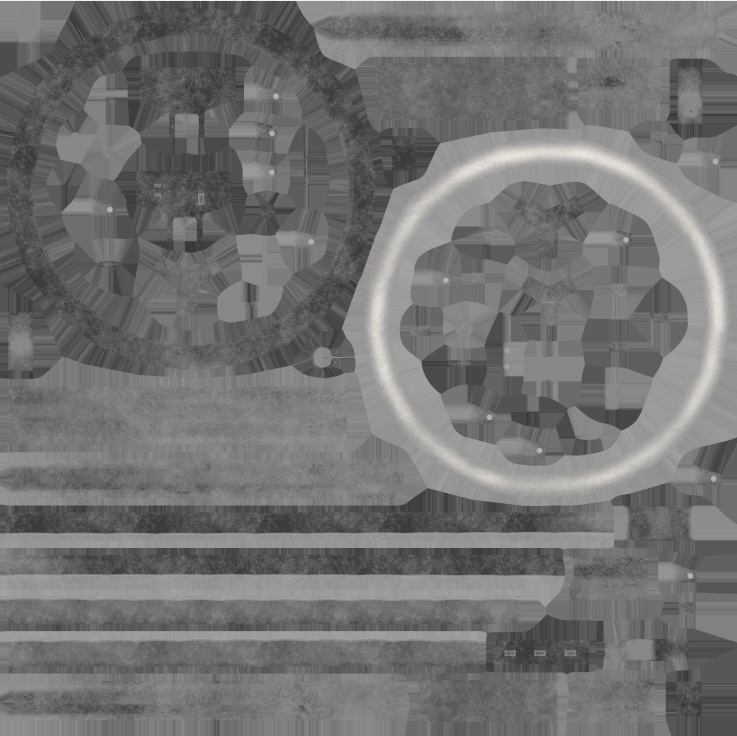
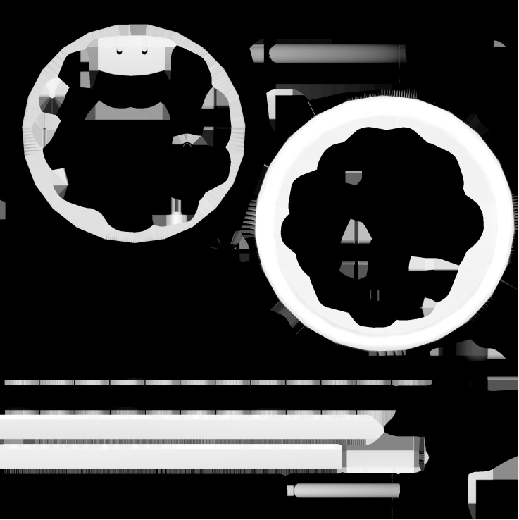
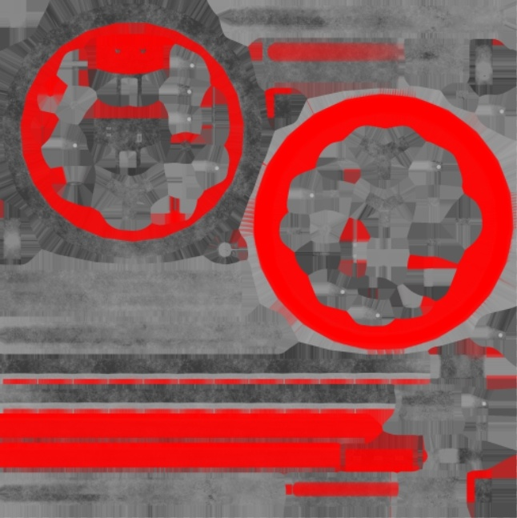
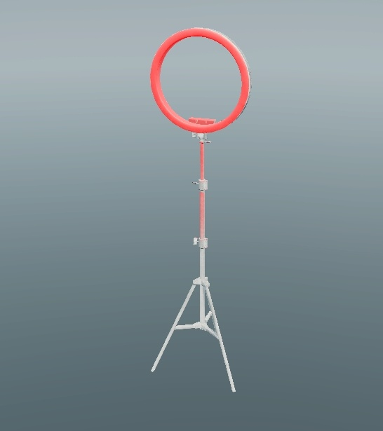
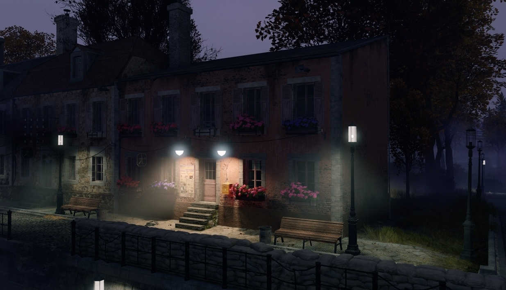

Shader: rendinst_emissive
Overview
This shader is designed for self-illuminating surfaces.
This shader supports the flickering effect.
Parameters:
use_alpha_for_emission_mask=1– Uses the alpha channel of the albedo as an emission mask. Values:0/1.emissive_color=1,1,1,1– Specifies the emissive color and intensity.The first three components represent the color (RGB)
The fourth component is the intensity. If the intensity is negative, the emission mask is inverted.
emission_albedo_mult=1– Multiplies the emissive color by the albedo color. Values range from0to1.nightly=0– Emission only occurs at night. Values:0/1.
Textures
tex0: Diffuse
tex2: Normals
The alpha channel of the diffuse color texture can be used to store the emission mask (areas that emit light are white).
 {kind=link}
{kind=link}
Application
Entire Model: Apply the shader to the entire model if you want widespread emissive elements, such as simulating light reflections from a bulb on chandelier parts. In this case, using an emission mask is recommended.
Specific Parts: Alternatively, apply the shader only to specific glowing parts of the model. The emission mask may not be necessary in this scenario.
By default, the emissive color is derived from the albedo color.
 {kind=link}
{kind=link}
Parameters
Important
This shader often requires custom parameter settings for each asset, rather than reusing values from other assets. Therefore, it’s important to configure the parameters specifically for your use case. Do not blindly copy parameters from other assets.
use_alpha_for_emission_mask=1
This parameter controls the use of the albedo’s alpha channel as the emission mask.
1: The alpha channel of the albedo is used as the emission mask.0: The entire geometry with the shader emits light.
use_alpha_for_emission_mask=1 |
use_alpha_for_emission_mask=0 |
|---|---|
Only the areas defined by the albedo's alpha channel will emit light. |
The entire geometry emits light. The difference in color is due to the non-red parts of the albedo where the emission fades out according to the mask, while the entire geometry emits light (including the grey areas). |
{kind=link}
{kind=link}
emissive_color=1,1,1,1
This parameter defines the color and intensity of the emission.
The first three components are the RGB color of the emission.
The fourth component is the emission intensity.
If positive, the alpha channel of the albedo is used as a direct mask.
If negative, the mask is inverted.
By default, all parameters are set to 1, meaning the albedo color and the
emission mask are used without modification.
Note
If a multicolored emission is needed for a single material (e.g., a stained glass window), it is recommended to set the color in the diffuse texture and multiply it with a white emissive color.
Important
Be sure to observe the differences between the Asset Viewer and the in-game results. This discrepancy underscores the importance of verifying and fine-tuning your work by reviewing it directly within the game environment.
Examples with white albedo (as it is easier to override compared to the bright red in previous examples):
emissive_color=0,1,0,1 |
emissive_color=0,1,0,10 |
|---|---|
Green emissive color is applied. In the Asset Viewer, it is barely noticeable, but it is very strong in-game. |
A strong green emission is applied. The glow effect in-game is very prominent. |
{kind=link}
{kind=link}
{kind=link}
{kind=link}
Important
Avoid excessive emission intensity. It directly impacts the glow effect, as seen in the screenshots above. Fine-tune the emission carefully for each asset. Excessive emission not only looks unnatural but can also negatively affect gameplay by interfering with camera adaptation. Aim for minimal, but noticeable, glow.
The glow effect also depends on the size of the emitting geometry. For example, thicker lanterns have a stronger glow than thinner ones, not only because of different emission intensities but also due to their larger size.
{kind=link}
In the screenshot above, the glow effect on the thick lanterns is excessive, but reducing the values further made the glow barely visible – thus, the current setting was kept. The glow effect on the thin lanterns is adequate, with room for a slight increase, but not much.
emission_albedo_mult=1
This parameter controls the multiplication of the emissive color by the albedo
color, as defined by the emissive_color shader parameter. Essentially, it acts
like the “Multiply” blend mode in Photoshop.
Values range from 0 to 1, where:
0: No multiplication. Only the shader’s emissive color is used.1: Full multiplication with the albedo color.
Important
When multiplying drastically different colors (e.g., red and green), the result can be a complete absence of emission since (0,1,0) * (1,0,0) = (0,0,0). Avoid this scenario.
emission_albedo_mult=0 |
emission_albedo_mult=0.5 |
emission_albedo_mult=1 |
|---|---|---|
No multiplication with albedo color. The shader’s emissive color is green. Results in a green emissive layer over the red albedo, leading to a yellow color in the Asset Viewer. The in-game result is correct. |
Multiplies the albedo color by 50%. The shader’s emissive color is green. The in-game glow intensity is reduced by half due to the interaction of two contrasting colors. |
Full multiplication with the albedo color. The shader’s emissive color is green. Almost no emission is visible since (0,1,0) * (1,0,0) = (0,0,0). Increasing emission intensity (e.g., to 10 or 100) may improve visibility, but this is not a proper solution and will likely not look correct. |
Asset Viewer:
{kind=link}
{kind=link}
{kind=link}
Game - Result:
{kind=link}
{kind=link}
{kind=link}
Game - Albedo:
{kind=link}
{kind=link}
{kind=link}
Game - Emissive:
{kind=link}
{kind=link}
{kind=link}
nightly=1
This parameter controls whether the emissive effect is active only during nighttime.
Values:
0: By default, the emissive effect is always active.1: The emissive effect is only active during nighttime. The definition of “night” is controlled by scripts elsewhere and is not influenced by this parameter.